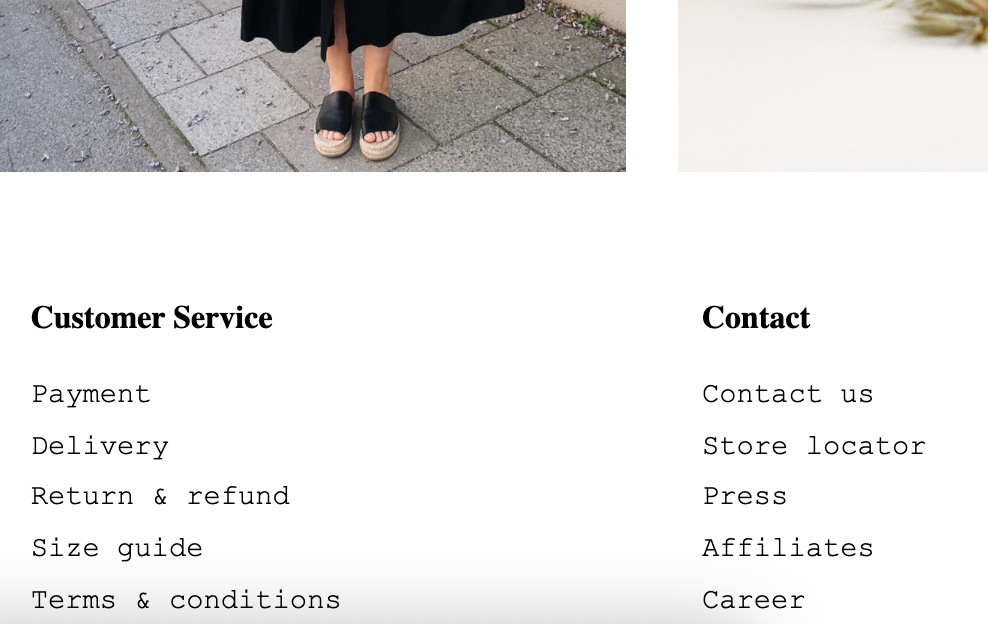
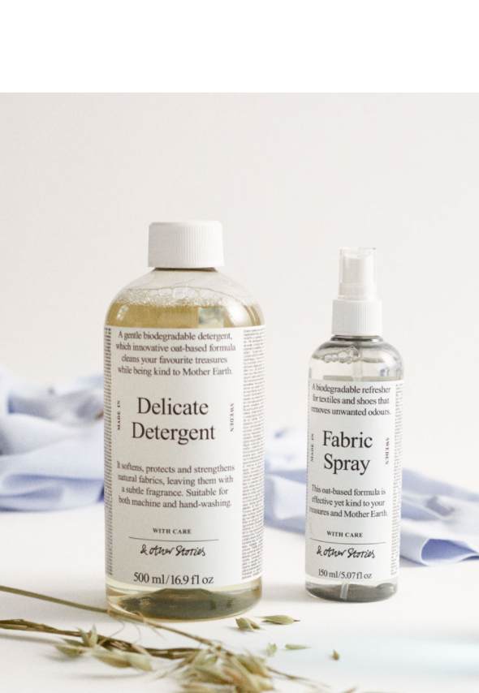
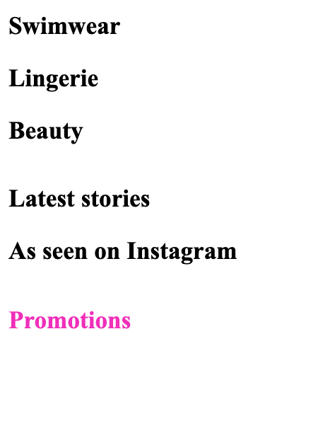

Det här projektet var också en del av en övningsuppgift för CSS Grid. Här fick jag chans att öva på både en aside-meny, main content i form av bilder, och en ganska bred footer i form av flera listor med "länkar". Det är även flexbox som används för produktbilderna här.


